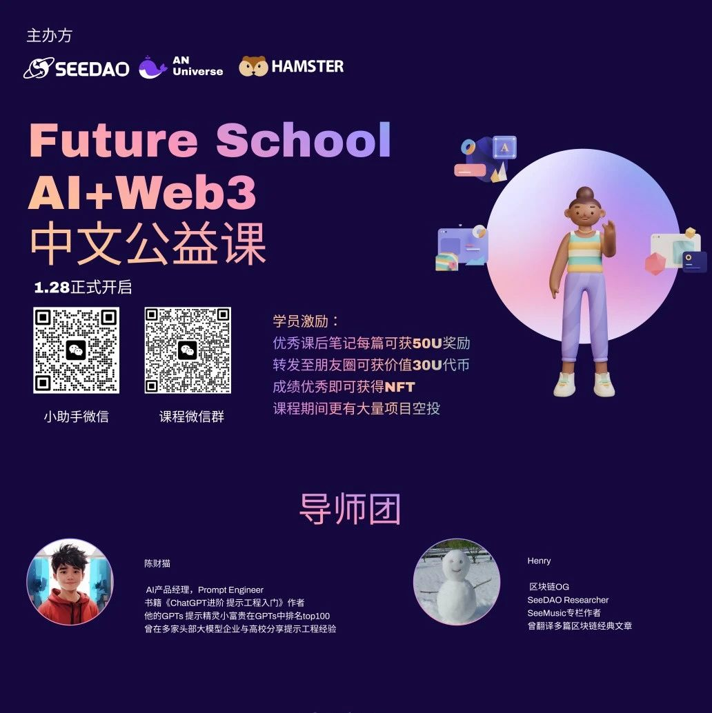

2024 跟上世界的潮流，一起上车! AI + Web3 中文公益课程
作者: SeeDAO
分类:
SeeDAO, Web3
AI + Web3中文公益课，距离1月28日开课，倒数 5 天 ⏰

前言
凡是看到风暴即将来袭的人，都应该提醒别人。我们，看到了。毫无疑问，AI 是去年最大的一场风暴，它正在火速席卷各行各业，让许多人一夜下岗，也催生出了新的产业生态。Web3, 一场从2008 北京奥运年就已经拉开序幕的价值革命，经历了一代又一代的技术极客、金融巨鳄，也在今年厚积喷发迎来了又一轮高峰。相对当前传统世界经济下行，股市低开，Web3 新世界无疑是那一片蓝海和未来。然而，这两项技术革命目前只在小范围内被关注，究根到底是由于没有通俗易懂的课程帮助大家学习、上车。凛冬和未来一起到来，我们希望让更多人看到另一种可能。所以，最大的Web3华语社区 SeeDAO，新一代AI内容创作平台AN Universe 和开发工具 Hamster 联手发布了这一套 AI+Web3中文公益课。这是一个实用的、以就业为导向的 AI+Web3课程，完全免费且后续没有任何收费计划。而且，为了鼓励大家学习，我们得到了多个生态建设者的支持，得以给优秀学员发放各种奖励。AI + Web3公益课程一经推出，即刻受到热烈关注，各个社区媒体、高校区块链纷纷响应支持。